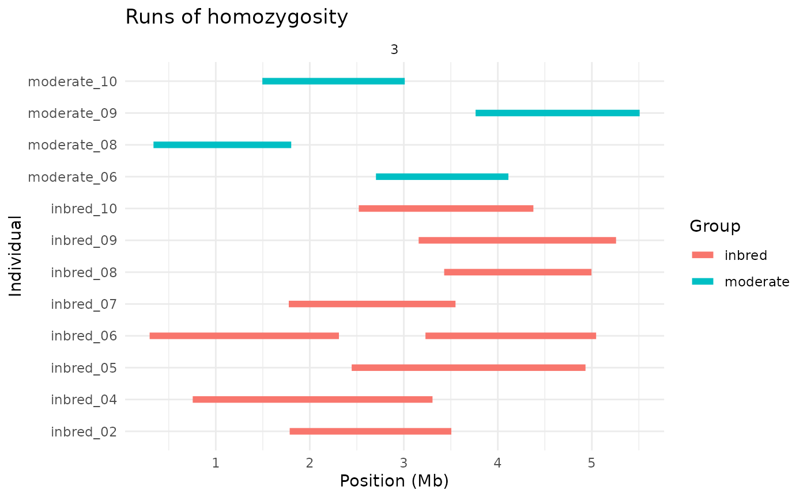
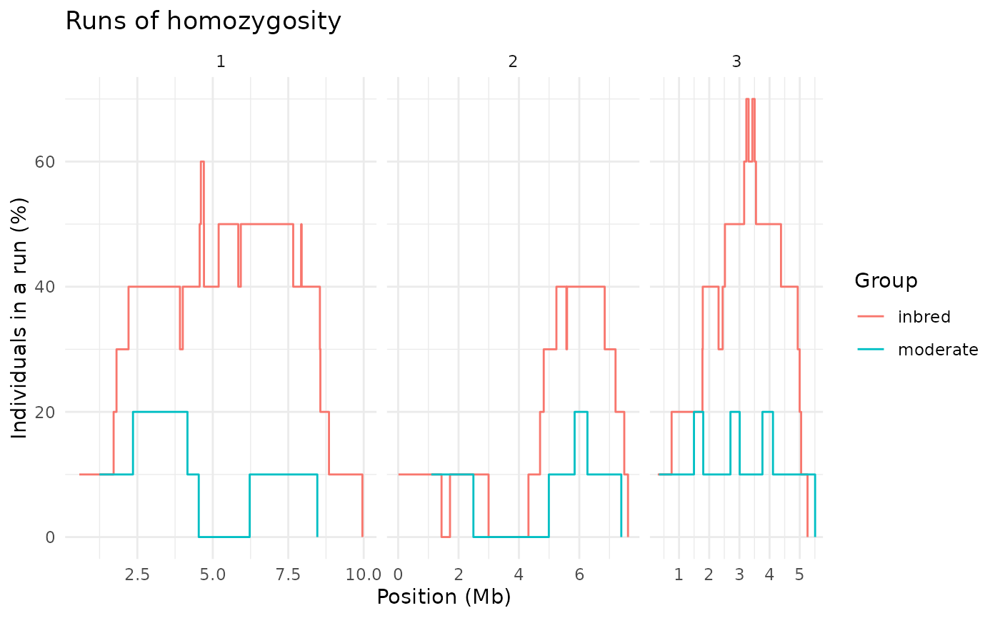
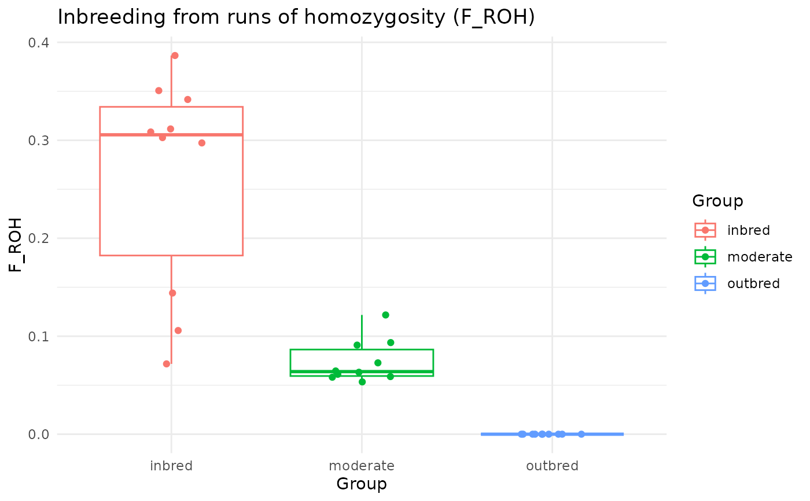
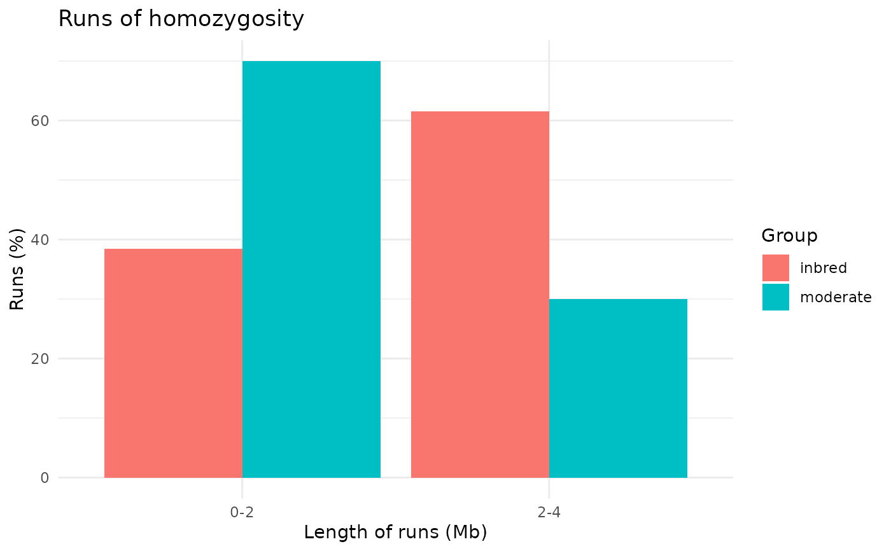

Plots of runs of homozygosity found by
windows_indiv_roh(), equivalent to the plots of detectRUNS. Runs are
coloured (or split) by group if the gen_tibble was grouped. The
following types of plots are available:
runs: the runs of each individual along each chromosome (asdetectRUNS::plot_Runs());stacked: the runs of each group stacked along each chromosome, one run per line, ordered by start (asdetectRUNS::plot_StackedRuns());coverage: the percentage of individuals of each group in a run along each chromosome (asdetectRUNS::plot_SnpsInRuns()anddetectRUNS::plot_manhattanRuns(), computed from the runs rather than at each locus);froh: the inbreeding coefficient F_ROH, the total length of the runs of an individual over the length of the genome (withfroh_by = "individual", one point per individual, by group) or of each chromosome (withfroh_by = "chromosome", the mean of each group) (asdetectRUNS::plot_InbreedingChr()); the length of a chromosome is its largest position, as indetectRUNS;violin: the distribution of the total (or mean, seemethod) length of the runs of each individual, by group (asdetectRUNS::plot_ViolinRuns());length_class: the percentage of runs in each class of length, by group (asdetectRUNS::plot_DistributionRuns()).
Arguments
- object
an object of class
indiv_roh, as returned bywindows_indiv_roh()- type
the type of plot (
runs,stacked,coverage,froh,violinorlength_class)- chromosome
the chromosomes to plot (by default, all those with runs; for
frohwithfroh_by = "individual", the genome is always used)- froh_by
for
froh, whether to plot F_ROH of each individual over the genome (individual), or the mean F_ROH of each group on each chromosome (chromosome)- method
for
violin, whether to plot the total (sum) or the mean (mean) length of the runs of each individual- classes
for
length_class, the lower bounds of the classes of length of the runs, in Mb (the last class has no upper bound)- ...
not currently used.
Details
Individuals with no runs count in coverage, froh and violin (with no
runs, or a length of 0).
autoplot produces simple plots to quickly inspect an object. They are not
customisable; we recommend that you use ggplot2 to produce publication
ready plots.
Examples
# a simulated dataset of three populations with increasing inbreeding
bed_file <- system.file("extdata", "roh", "roh_sim.bed",
package = "tidypopgen"
)
sim_gt <- gen_tibble(bed_file, backingfile = tempfile(), quiet = TRUE)
sim_roh <- windows_indiv_roh(sim_gt %>% group_by(population))
autoplot(sim_roh, type = "runs", chromosome = "3")

autoplot(sim_roh, type = "coverage")

autoplot(sim_roh, type = "froh")

autoplot(sim_roh, type = "length_class")
